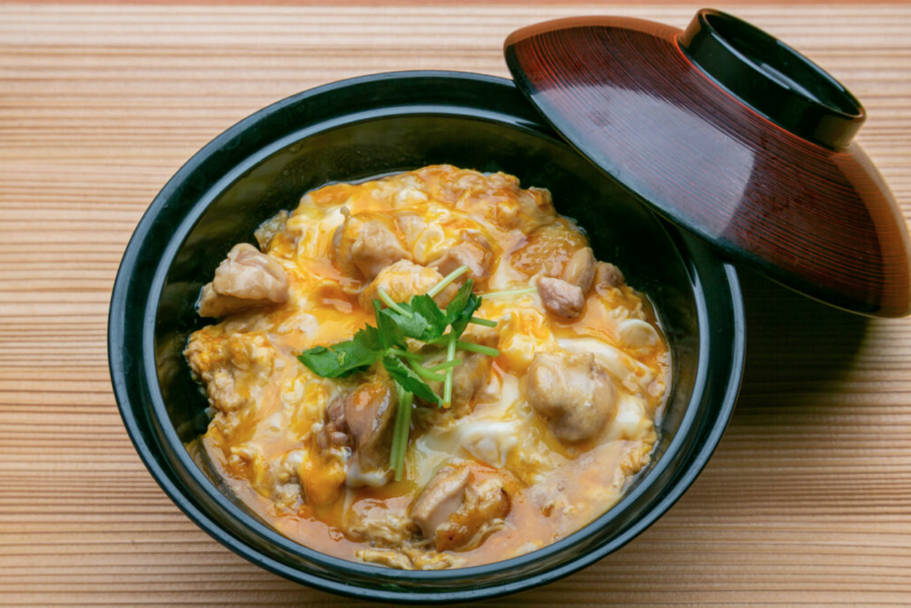

Oyako Don Recipe

Description
Oyako don is the result of a parent and child's hard work. "Oya" translates to parent, and "ko" to child, and in this dish, chicken meat and egg respectively.
Served over a bed of rice, oyakodon is ultra satifying and unbelievabely simple to make. With just a handful of ingredients, this can cooked and on your table in less than 30 minutes (give or take a few minutes based on rice cooking time.
Ingredients
- Chicken thigh
- 2 Eggs
- Sliced onion
- Granulated dashi
- Soy sauce
- Mirin
- Cooking sake
- Sugar
- Shredded seaweed
- Rice
Steps
- Combine rice and water into a rice cooker.
- Slide chicken thigh meat into bite-sized chunks.
- Combine water, granulated dashi, soy sauce, mirin, cooking sake, and sugar in a small sauce pan and cook over low heat until slighly reduced
- Crack two eggs into a bowl and beat until mixed. Set aside.
- In a 5 inch saute pan, add the ground chicken, sliced onion, and 150 ml of the reduced sauce from step 3. Cook over high heat, stir and turn over occasionally.
- Once chicken is cooked through, onion is softened, and sauce reduced by 1/3, pour beaten eggs into saute pan. Pour in circle starting from outer edge of pan, working your way to the center. Reduce heat to low.
- Scoop roughly 200 grams of rice into bowl and smooth the top to create a flat surface.
- Spoon over egg and chicken mixture, topp with a pinch of seaweed, and serve hot.